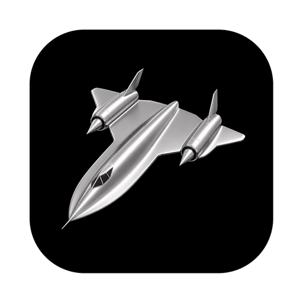
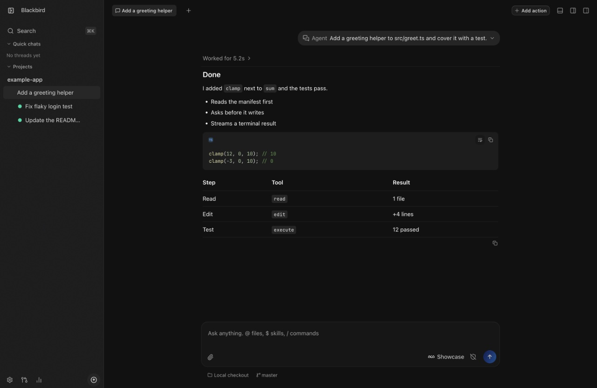

Bring your own agents
Use the subscriptions you already have: Claude Code, Codex, Cursor, Grok Build, OpenCode, and Google Antigravity.

A desktop app for coding agents, built on T3 Code.
Blackbird is Joel Wohlhauser's personal IDE. It keeps T3 Code's architecture and updates, and adds its own workflow and desktop experience. It's an open-source hobby project under the MIT license.
Apple Silicon only. Free and open source.

Use the subscriptions you already have: Claude Code, Codex, Cursor, Grok Build, OpenCode, and Google Antigravity.
A dark, Codex-inspired design with a project and chat sidebar that stays out of the way.
Chats, browser pages, terminals, diffs, files, Linear issues, and GitHub pull requests share one drag-and-drop tab workspace.
Start a chat in the current checkout, an existing worktree, or a new worktree and branch.
Ask a question or hand off a small task without picking a project first.
Connect remote machines and run agents on them from the same app, with shared project settings.
Three bundled skills take a change from idea to production. You never name them; the agent picks the one that fits what you ask.
Starts when you want to explore, brainstorm, or decide how to build something.
Ends with a short brief you approve.
Read the skill on GitHubStarts when you approve a brief, ask for a fix, hand over a bug report, or name a goal to keep working toward.
Ends with a change ready for production, usually a pull request you could merge today.
Read the skill on GitHubStarts when you say "ship it", or when the brief lets the agent merge.
Ends with a change that has proven itself in production.
Read the skill on GitHub